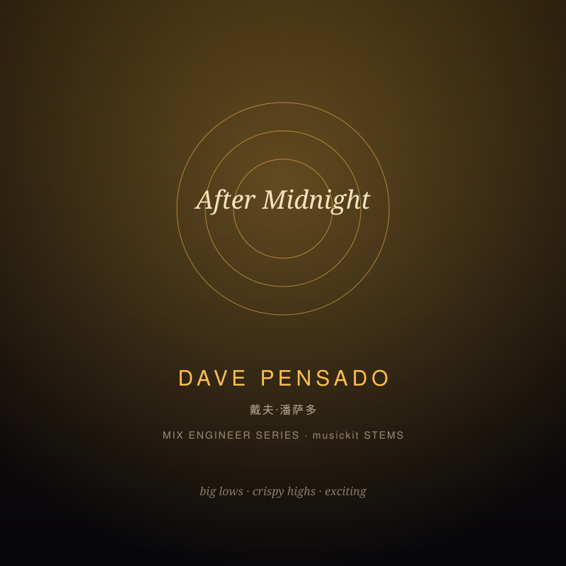

Hitmaker and educator ('Pensado's Place'); credits include Christina Aguilera, Kelly Rowland, Beyoncé. Signature: BIG bottom, crispy sparkling highs, a smiley curve that sounds exciting on any system.
Reference artists: Christina Aguilera, Kelly Rowland, Beyoncé, Justin Timberlake · target ~-10.0 LUFS
| Stage | Signature | Implementation |
|---|---|---|
| Drums | Big and snappy | HPF 30 Hz · lowshelf +2.0 dB @ 110 Hz · peak +2.5 dB @ 6000 Hz · comp -17 dB 3.5:1 (5/110 ms, k2, +1.5 dB) · sat drive 1.3 mix 0.15 · room reverb 10% · -5 dB |
| Bass | Sub-heavy, rumbling | HPF 28 Hz · lowshelf +3.0 dB @ 70 Hz · peak +1.5 dB @ 90 Hz · comp -22 dB 5:1 (3/140 ms, k2, +1 dB) · sat drive 1.5 mix 0.2 · -7 dB |
| Harmony/pad | Balanced, sparkly | HPF 55 Hz · lowshelf -1.5 dB @ 220 Hz · peak +1.5 dB @ 2800 Hz · comp -23 dB 2.5:1 (14/240 ms, k2, +0.5 dB) · med reverb 15% · M/S +0.35 · -12 dB |
| Lead (the 'voice') | Bright, crispy, exciting | HPF 75 Hz · lowshelf +0.5 dB @ 170 Hz · peak +2.5 dB @ 3500 Hz · peak +2.5 dB @ 8000 Hz · comp -15 dB 2:1 (18/150 ms, k3, +2 dB) · long reverb 25% · M/S +0.12 · -3 dB |
| Background | Wide and shimmery | HPF 100 Hz · LPF 10500 Hz · comp -25 dB 2:1 (18/260 ms, k2, +0 dB) · long reverb 30% · M/S +0.55 · -15 dB |
| Master bus | Big lows + crispy highs, exciting loudness | HPF 28 Hz · lowshelf +1.5 dB @ 55 Hz · peak +1.0 dB @ 3000 Hz · peak +2.0 dB @ 14000 Hz · comp -15 dB 1.8:1 (7/130 ms, k2, +2 dB) · sat drive 1.15 mix 0.1 · M/S +0.15 · target -10 LUFS · limiter rel 80 ms |